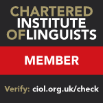
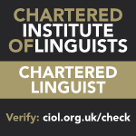
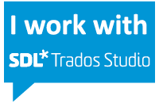

Dearns & Browne Translations is a partnership established in 2011 specialising in pharmaceutical and medical translations.
Philippa Dearns and Annabel Browne hold BAs in Modern Languages, MAs in Applied Translation Studies and are Members and Chartered Linguists of the Chartered Institute of Linguists. Annabel is registered with the Greek Embassy (UK) as an approved translator.
D&B also provides certified translations, MTPE, editing/proofreading and transcreation, and works in other fields including technical, education, leisure and tourism, marketing and advertising.
For more information or a quote, please contact us at info@dearnsandbrowne.co.uk
  